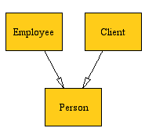

class Person:
def __init__(self):
pass
class Employee(Person):
def __init__(self):
pass
class Client(Person):
def __init__(self):
pass
if __name__ == "__main__":
person = Person()
employee = Employee()
client = Client()
|  |
Sample use from the command line (Linux):
$pyumlgraph -o simple.dot simple.py $dot -Tpng -o simple.png simple.dotHere's the output, simple.dot. You can find the simple.py file in PyUMLGraph's examples/ directory. Here's another example diagram, produced using example1.py:
-owrite dot language UML output to this file --help Display this help then exit. --version Output version information then exit. --types Include common types (str, int, dict, etc.) --methods Show class methods --attributes Show class attributes --references Distinguish between self and local references --all Equivalent to --types --methods --attributes --references --nodefillcolor= Set the node fill color to this string. can be Unix color name or a hex 3-tuple. --bgcolor= Set the diagram's background color to this string. can be Unix color name or a hex 3-tuple.
python setup.py installNote that under Windows, you may have to use the --prefix= and --install-scripts options to tell setup.py where to put the pyumlgraph.py script.